盖亚计划
Gaia Project · 官方中文规则书全文转录
本页整理自《蓋亞計劃》(Gaia Project,Helge Ostertag & Jens Drogemüller 設計,Feuerland Spiele 出版)官方中文規則書(繁體中文版,游人碼頭發行),微信公眾號「桌游怎么玩」所載 19 頁掃描圖逐頁轉錄,並在對應章節嵌入原書掃描頁對照——點擊任意掃描頁即可放大查看。內容涵蓋簡介與目錄、遊戲配件、遊戲設置(版圖/開發面板/計分面板/種族挑選/首建築/回合助推板塊/中立玩家)、目標和遊戲流程、能量循環、六回合四階段流程、十大行動(建造礦產基地/蓋亞計劃/升級建築/建立聯邦/提升研究/能量與量子智能方塊行動/特殊行動/放棄/吸取能量/快速行動)、遊戲結束計分與進階設置(可變版圖/可變行動順序)。規則內容歸版權方所有,轉錄僅供個人學習查閱。
整理說明:掃描頁經雙遍 OCR 轉錄並逐項複核,組件數量自檔自洽(回合计分板塊 4×1+3×2=10✓;基礎科技 9×4=36✓;聯邦標記 6 種×3+1 枚格倫〔?〕星人專用=19✓;單人模式卡牌印頁 3 標題記 25 張而五項明細加和為 30,疑「包括」僅涵蓋種族/行動順序/智腦三項(7+1+17=25),照錄備考)。原書目錄所列附錄(印頁 20-24:種族/回合助推板塊·回合计分板塊/開發面板·行動格/科技板塊)及單人智腦規則為獨立冊頁,未隨本篇掃描收錄。種族名「晶礦〔?〕星人」「格倫〔?〕星人」按多遍裁讀並經擴展《失落的艦隊》第 16 页十八種族總覽交叉驗證(擴展版總覽作「晶星人」);個別無法確認的字以〔?〕標注,〔圖:〕〔側注〕為版面插圖/旁注佔位說明;原書為繁體中文版,轉錄保留繁體字形。擴展《蓋亞計劃:失落的艦隊》規則書見站內獨立頁面。
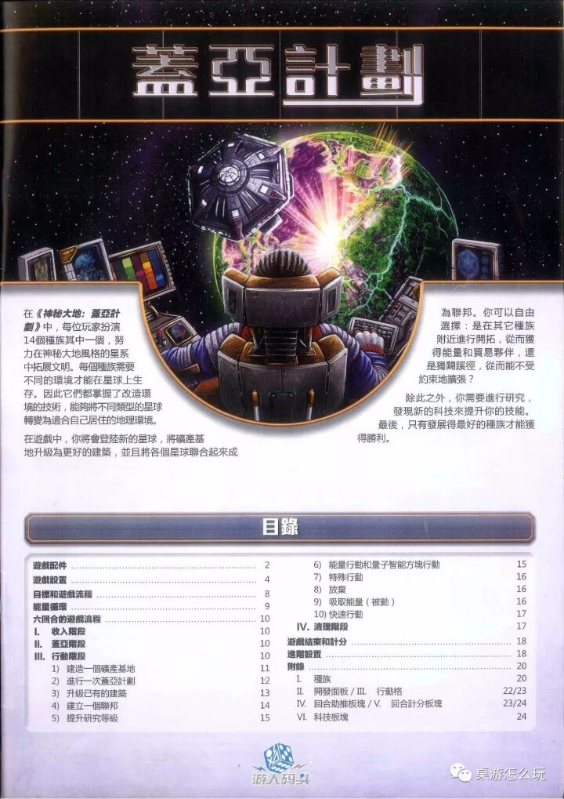
蓋亞計劃
在《蓋亞計劃》中,每位玩家扮演 14 個種族其中一個,努力在神秘大地風格的星系中拓展文明。每個種族需要不同的環境才能在星球上生存。因此它們都掌握了改造環境的技術,能將不同類型的星球轉變為適合自己居住的地理環境。
在遊戲中,你將會登陸新的星球,將礦產基地升級為更好的建築,並將各個星球聯合起來成為聯邦。你可以自由抉擇:是在其它種族附近進行開拓,而獲得能量和貿易夥伴,還是獨闢蹊徑,而不受約束地擴張?除此之外,你需要進行研究,發現新的科技來提升你的技能。最後,只有發展得最好的種族才能獲得勝利。
目錄
- 遊戲配件 …… 2
- 目標和遊戲流程 …… 8
- 能量循環 …… 9
- 六回合的流程 …… 10(I. 收入階段 10 / II. 蓋亞階段 10 / III. 行動階段 10 / IV. 清理階段 10)
- 行動階段:1) 建造一個礦產基地 11 · 2) 進行一次蓋亞計劃 12 · 3) 升級已有的建築 13 · 4) 建立一個聯邦 14 · 5) 提升研究等級 15 · 6) 能量行動和量子智能方塊行動 15 · 7) 特殊行動 16 · 8) 放棄 16 · 9) 吸取能量(被動) 16 · 10) 快速行動 17
- 遊戲結束和計分 …… 17
- 起始設置 …… 18
- 附錄:I. 種族 20 · II. 回合助推板塊/回合計分板塊 22/23 · III. 開發面板/行動格 23/24 · IV. 科技板塊 24
〔圖:封面為《蓋亞計劃》遊戲美術——星雲中的星球與飛船〕
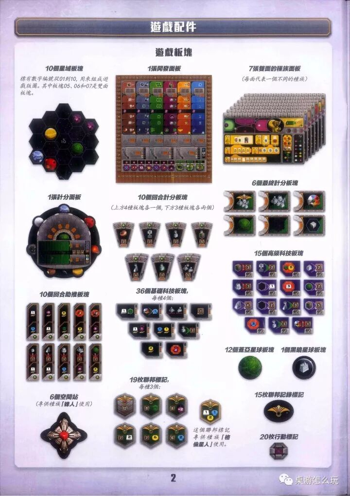
遊戲配件
遊戲版圖板塊
- 10 個星域板塊——標有數字編號從 01 到 10,用來組成遊戲版圖。其中板塊 05、06 和 07 是雙面板塊。
- 1 張開發面板
- 7 張雙面的種族面板(每面代表一個不同的種族)
- 6 個最終計分板塊
- 1 張計分面板
- 10 個回合計分板塊(上方 4 種板塊各一個,下方 3 種板塊各兩個)
- 15 個高級科技板塊
- 10 個回合助推板塊
- 36 個基礎科技板塊,每種 4 個
- 12 個蓋亞星球板塊
- 1 個黑暗星球板塊
- 19 枚聯邦標記,每種 3 個〔圖:聯邦標記分值圖示〕
- 6 個空間站(專供種族【?人】使用)
- 15 枚聯邦記錄標記
- 20 枚行動標記
〔圖:配件實拍圖,含各組件數量角標〕
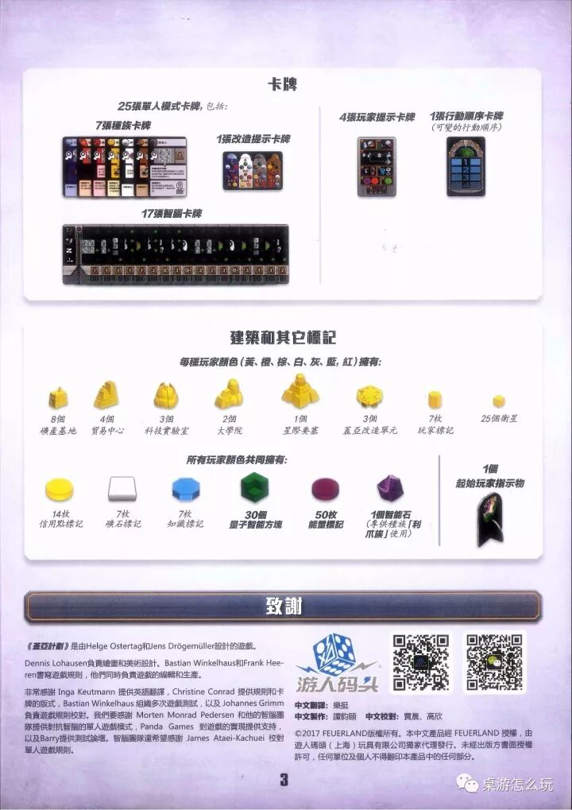
卡牌
25 張單人模式卡牌,包括:
- 7 張種族卡牌
- 4 張玩家提示卡牌
- 1 張行動順序卡牌(可變的行動順序)
- 17 張智腦卡牌
- 1 張改造提示卡牌
建築和其它標記
每種玩家顏色(黃、橙、棕、白、灰、藍、紅)擁有:
- 8 個礦產基地
- 4 個貿易中心
- 3 個科技實驗室
- 2 個大學院
- 1 個星際要塞
- 3 個蓋亞改造單元
- 7 枚玩家標記
- 25 個衛星
- 14 枚信用點標記
- 7 枚礦石標記
- 7 枚知識標記
所有玩家顏色共同擁有:
- 30 個量子智能方塊
- 50 枚能量標記
- 1 個智能石(專供種族「利爪族」使用)
- 1 個起始玩家指示物
〔圖:建築與標記實拍圖〕
致謝
《蓋亞計劃》是由 Helge Ostertag 和 Jens Drogemüller 設計的遊戲。
Dennis Lohausen 負責繪圖和美術設計。Bastian Winkelhaus 和 Frank Heeren 撰寫遊戲規則,他們同時負責遊戲的編輯和生產。
非常感謝 Inga Keutmann 提供英語翻譯,Christine Conrad 提供規則和卡牌的版式,Bastian Winkelhaus 組織多次遊戲測試,以及 Johannes Grimm 負責遊戲規則校對。我們要感謝 Morten Monrad Pedersen 和他的智腦團隊提供對抗智腦的單人遊戲模式,Panda Games 對遊戲的呈現提供支持,以及 Barry 提供測試。智腦團隊還希望感謝 James Ataei-Kachuei 校對單人遊戲規則。
中文翻譯:〔?〕 / 中文協作:約〔?〕 / 中文校對:〔?〕展、高欣
2017 FEUERLAND 版權所有。本中文產品經 FEUERLAND 授權由游人碼頭(上海)玩具有限公司獨家代理發行,未經出版方書面授權許可,任何單位及個人不得翻印本產品中的任何部分。
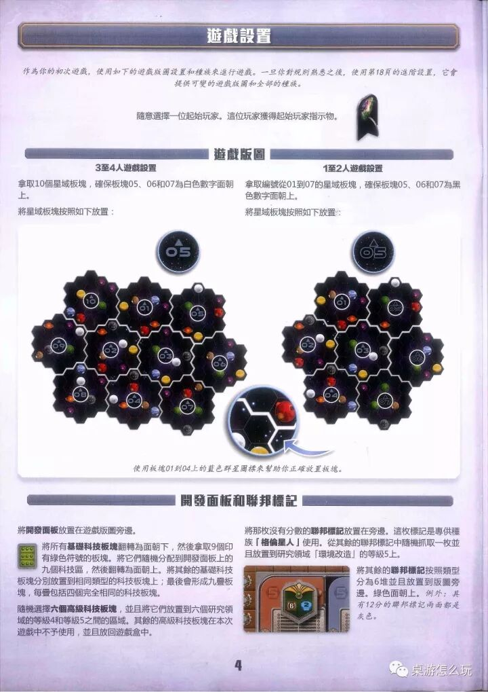
遊戲設置
作為你的初次遊戲,使用如下的遊戲版圖設置和種族來進行遊戲。一旦你對規則熟悉之後,使用第 18 頁的進階設置,它會提供可變的遊戲版圖和全部的種族。
隨意挑選一位起始玩家。這位玩家獲得起始玩家指示物。
遊戲版圖
3 至 4 人遊戲設置:拿取 10 個星域板塊,確保板塊 05、06 和 07 為白色數字面朝上。將星域板塊按照如下放置:〔圖:3-4 人星域板塊擺放圖〕
1 至 2 人遊戲設置:拿取編號 01 到 07 的星域板塊,確保板塊 05、06 和 07 為黑色數字面朝上。將星域板塊按照如下放置:〔圖:1-2 人星域板塊擺放圖〕
使用板塊 01 到 04 上的藍色群星圖標來幫助你正確放置板塊。
開發面板和聯邦標記
- 將開發面板放置在遊戲版圖旁。
- 將那枚沒有分數的聯邦標記放置在旁邊,這枚標記是專供種族「格倫〔?〕星人」使用。其餘的聯邦標記中隨機抓取一枚,並放置到研究領域「環境改造」的等級 5 上。
- 將所有基礎科技板塊翻轉為面朝下,然後拿取 9 個印有綠色符號的板塊。將它們隨機分配到開發面板上的九個科技區,然後翻為面朝上。將其餘的基礎科技板塊分別放置到相同類型的科技板塊上:最後會形成九堆板塊,每堆包括四個完全相同的科技板塊。
- 隨機選擇六個高級科技板塊,並將它們放置到六個研究領域的等級 4 和等級 5 之間的區域。其餘的高級科技板塊在本次遊戲中不予使用,並放回遊戲盒中。
- 將其餘的聯邦標記按照類型分 6 堆並放置到版圖旁邊。綠色面朝上。例外:具有 12 分的聯邦標記兩面都是灰色。
〔圖:開發面板設置實拍,角標:6 個高級科技板塊(隨機選擇)/9×4 基礎科技板塊(隨機排列)/1 枚聯邦標記(隨機選擇)/6/2〕
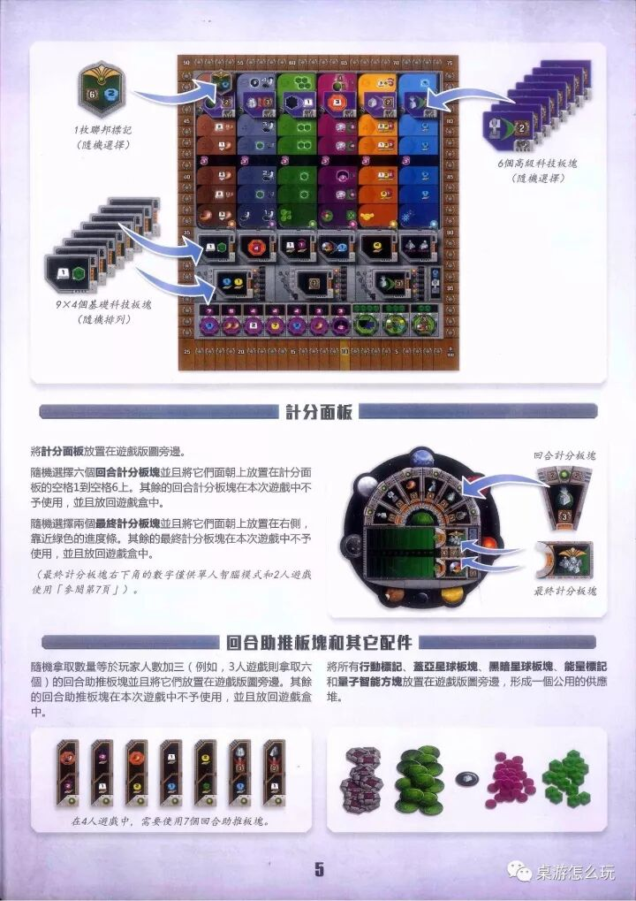
計分面板
- 將計分面板放置在遊戲版圖旁。
回合計分板塊
- 隨機挑選六個回合計分板塊並將它們面朝上放置在計分面板的空格 1 到空格 6 上。其餘的回合計分板塊在本次遊戲中不予使用,並放回遊戲盒中。
- 隨機挑選兩個最終計分板塊並將它們面朝上放置在右側,靠近綠色的進度條。其餘的最終計分板塊在本次遊戲中不予使用,並放回遊戲盒中。(最終計分板塊右下角的數字僅供單人智腦模式和 2 人遊戲使用,參見第 7 頁。)
回合助推板塊和其它配件
- 將所有行動標記、蓋亞星球板塊、黑暗星球板塊、能量標記和量子智能方塊放置在遊戲版圖旁,形成一個公用的供應堆中。
- 隨機拿取數量等於玩家人數加三(例如,3 人遊戲拿取六個)的回合助推板塊並將它們放置在遊戲版圖旁邊。其餘的回合助推板塊在本次遊戲中不予使用,並且放回遊戲盒堆。
在 4 人遊戲中,需要使用 7 個回合助推板塊。
〔圖:計分面板設置實拍〕〔图:页底印有公众号「桌游怎么玩」便签贴纸〕
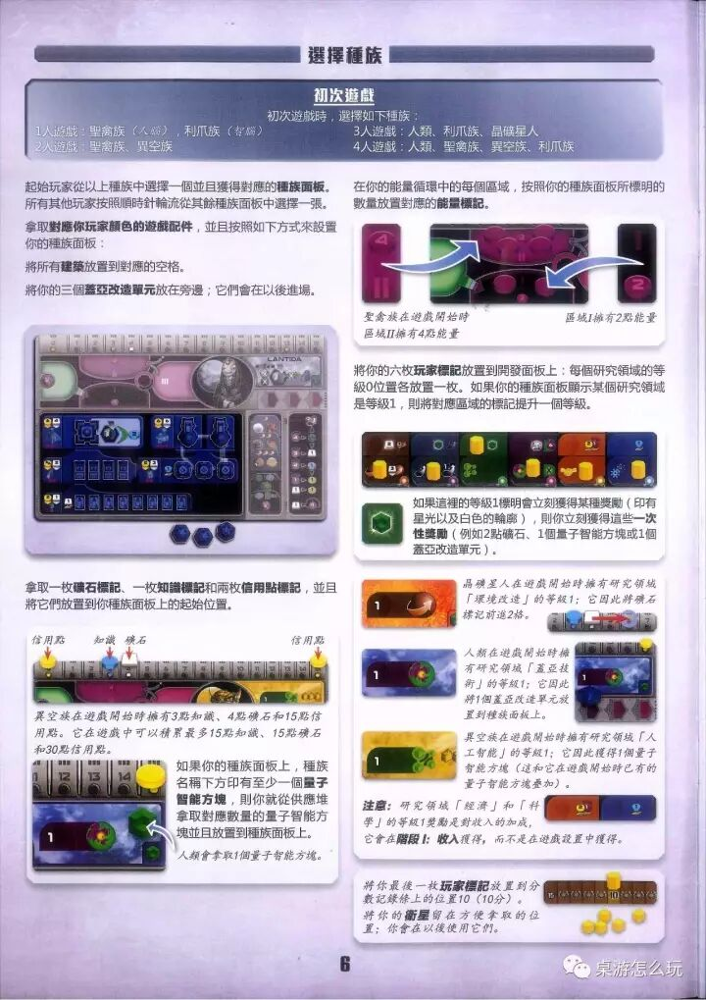
挑選種族
初次遊戲時,挑選如下種族:
- 1 人:聖禽族(玩家端)、利爪族(智腦)
- 2 人:聖禽族、翼空族
- 3 人:人類、利爪族、晶礦〔?〕星人
- 4 人:人類、聖禽族、翼空族、利爪族
起始玩家從以上種族中挑選一個並獲得對應的種族面板。所有其他玩家按照順時針輪流從其餘種族面板中挑選一張。
你的種族面板
- 拿取對應你玩家顏色的遊戲配件,並且按照如下方式來設置你的種族面板:
- 在你的能量循環中的每個區域,按照你的種族面板所標明的數量放置對應的能量標記。
- 將所有建築放置到對應的空格。
- 將你的三個蓋亞改造單元放在旁邊,它們會在以後進場。
- 將你的六枚玩家標記放置到開發面板上:每個研究領域的等級 0 位置各放置一枚。如果你的種族面板顯示某個研究領域是等級 1,則將對應區域的標記提升一個等級。如果這裡的等級 1 標明會立刻獲得某種獎勵(印有星光以及白色的輪廓),則你立刻獲得這些一次性獎勵(例如 2 點礦石、1 個量子智能方塊或 1 個蓋亞改造單元)。
- 拿取一枚礦石標記、一枚知識標記和兩枚信用點標記,並將它們放置到你種族面板上的起始位置。
如果你的種族面板上,種族名稱下方印有至少一個量子智能方塊,則你就從供應堆拿取對應數量的量子智能方塊並放置到種族面板上。
注意:研究領域「經濟」和「科學」的等級 1 獎勵是對收入的加成,它會在階段 I:收入中獲得,而不是在遊戲設置中獲得。
〔側注·聖禽族〕聖禽族在遊戲開始時區域 I 擁有 2 點能量、區域 II 擁有 4 點能量。 〔側注·晶礦〔?〕星人〕晶礦〔?〕星人在遊戲開始時擁有研究領域「環境改造」的等級 1;它因此將礦石標記前進 2 格。 〔側注·翼空族〕翼空族在遊戲開始時擁有 3 點知識、4 點礦石和 15 點信用點。它在遊戲中可以積累最多 15 點知識、15 點礦石和 30 點信用點。 〔側注·翼空族〕翼空族在遊戲開始時擁有研究領域「人工智能」的等級 1;它因此獲得 1 個量子智能方塊(這和它在遊戲開始時已有的量子智能方塊疊加)。 〔側注·人類〕人類在遊戲開始時擁有研究領域「蓋亞科技」的等級 1;它因此將 1 個蓋亞改造單元放置到種族面板上。
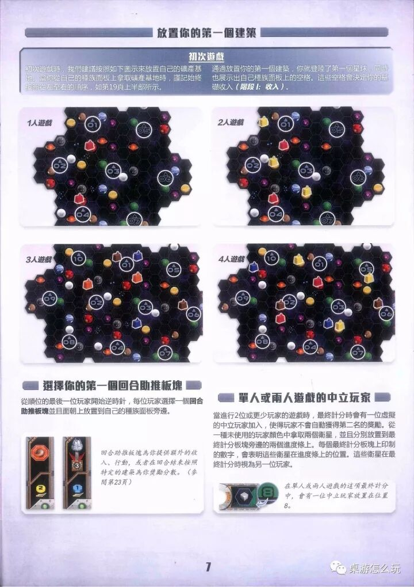
放置你的第一個建築
初次遊戲時,我們建議按照如下圖示來放置自己的礦產基地。
通過放置你的第一個建築,你就登陸了第一個星球,同時也展示出自己種族面板上的空格。這些空格會決定你的收入(階段 I:收入)。
- 1 人遊戲:〔圖:1 人礦產基地放置圖〕
- 2 人遊戲:〔圖:2 人礦產基地放置圖〕
- 3 人遊戲:〔圖:3 人礦產基地放置圖〕
- 4 人遊戲:〔圖:4 人礦產基地放置圖〕
當你從自己的種族面板上拿取礦產基地時,謹記始終按照從左至右的順序,如第 19 頁上半部所示。
挑選你的第一個回合助推板塊
從順位的最後一位玩家開始逆時針,每位玩家挑選一個回合助推板塊並面朝上放置到自己的種族面板旁邊。
回合助推板塊為你提供額外的收入、行動,或者在回合結束時按照特定的建築為你獎勵分數。(參見第 23 頁)
單人或兩人遊戲的中立玩家
當進行 2 位或更少玩家的遊戲時,最終計分時會有一位虛擬的中立玩家加入,使得玩家不會自動獲得第二名的獎勵。從一種未使用的玩家顏色中拿取兩個衛星,並分別放置到最終計分板塊旁的兩個進度條上,每個最終計分板塊上印製的數字,會表明這些衛星在進度條上的位置。這些衛星在最終計分時視為另一位玩家。
在單人或兩人遊戲的這項最終計分中,會有一位中立玩家放置在位置 8。
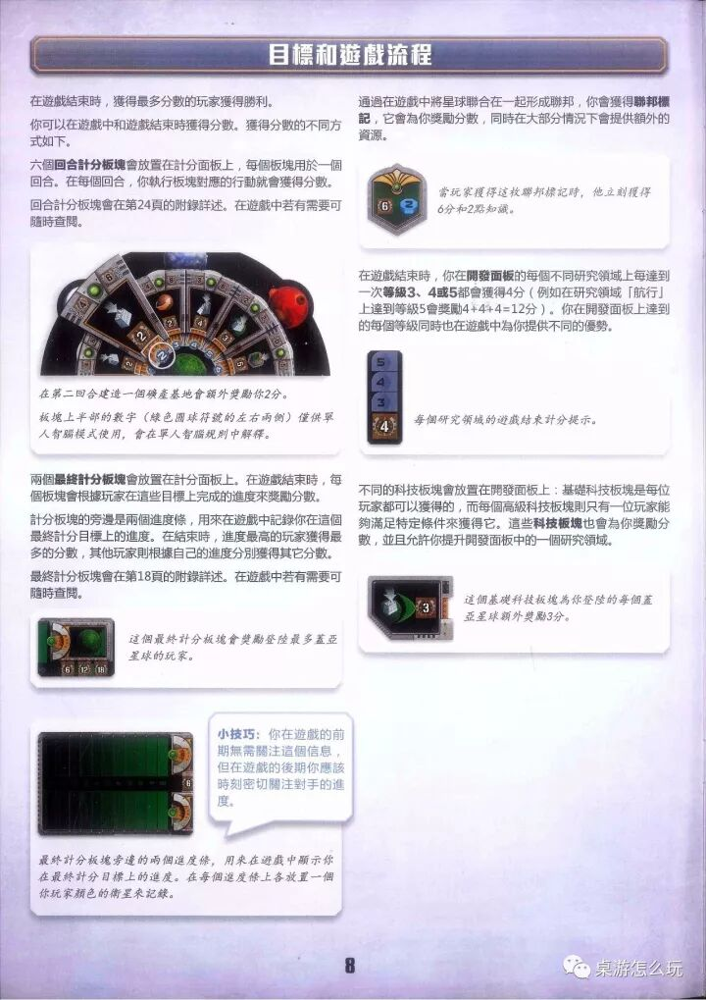
目標和遊戲流程
在遊戲結束時,獲得最多分數的玩家獲得勝利。你可以在遊戲中和遊戲結束時獲得分數。獲得分數的不同方式如下:
- 通過在遊戲中將星球聯合在一起形成聯邦,你會獲得聯邦標記,它會為你獎勵分數,同時在大部分情況下會提供額外的資源。
- 六個回合計分板塊會放置在計分面板上,每個板塊用於一個回合。在每個回合,你執行板塊對應的行動就會獲得分數。回合計分板塊會在第 23 頁的附錄詳述。在遊戲中若有需要可隨時查閱。〔側注:在第二回合建造一個礦產基地會額外獎勵你 2 分〕
- 在遊戲結束時,你在開發面板的每個不同研究領域上每達到一次等級 3、4 或 5 都會獲得 4 分(例如在研究領域「航行」上達到等級 5 會獎勵 4+4+4=12 分)。你在開發面板上達到的每個等級同時也在遊戲中為你提供不同的優勢。
- 兩個最終計分板塊會放置在計分面板上,在遊戲結束時,每個板塊會根據玩家在這些目標上完成的進度來獎勵分數,進度最高的玩家獲得最多的分數,其他玩家則根據自己的進度分別獲得其它分數。計分板塊的旁邊是兩個進度條,用來在遊戲中記錄你在這個最終計分目標上的進度。最終計分板塊會在第 18 頁的附錄詳述。在遊戲中若有需要可隨時查閱。
- 不同的科技板塊會放置在開發面板上:基礎科技板塊是每位玩家都可以獲得的,而每個高級科技板塊則只有一位玩家能滿足特定條件來獲得它。這些科技板塊也會為你獎勵分數,並允許你提升開發面板中的一個研究領域。
〔側注〕當玩家獲得這枚聯邦標記時,他立刻獲得 6 分和 2 點知識。 〔側注〕這個基礎科技板塊為你登陸的每個蓋亞星球額外獎勵 3 分。 〔側注〕這個最終計分板塊會獎勵登陸最多蓋亞星球的玩家。 〔側注〕小技巧:你在遊戲的前期無需關注這個信息,但在遊戲的後期你應該時刻密切關注對手的進度。 〔側注〕最終計分板塊旁邊的兩個進度條,用來在遊戲中顯示你在最終計分目標上的進度。在每個進度條上各放置一個你玩家顏色的衛星來記錄。 〔側注〕板塊上半部的數字(綠色圓球符號的左右兩側)僅提供每個研究領域的遊戲結束計分提示;〔此行另附數字〕僅供單人智腦模式使用,會在單人智腦規則中解釋。
能量循環
在整個遊戲中,你會獲得能量,它可以用於不同的行動和資源。能量使用能量標記來表示,你可以獲得或者燒掉它們。管理能量循環是《神秘大地:蓋亞計劃》中獲勝的重要因素。
你的種族面板上印有三個相連的區域。在遊戲中,你的能量標記會在這三個區域中按照順時針循環。在遊戲開始時,你的能量標記會放置在區域 I 和區域 II;區域 III 暫時是空的。三個能量區域的左側是綠色的蓋亞區。你只能通過特殊的技能來使用這個區域,詳情稍後解釋。
〔圖:遊戲開始時通常的能量標記分配情況〕
獲得能量
當你獲得能量時,按照如下方式依次處理:
- 如果區域 I 中有能量標記,則你每獲得 1 點能量,就將一枚能量標記從區域 I 移動到區域 II。
- 如果區域 I 是空的,則你每獲得 1 點能量,就將一枚能量標記從區域 II 移動到區域 III。
- 如果區域 I 和區域 II 都是空的,則你不能再獲得更多能量。
當你獲得新的能量標記時,始終放置到區域 I。
這個符號代表「獲得 4 點能量」。你可以通過能量標記上方的箭頭來識別這個符號。
〔例〕如果你獲得 3 點能量而區域 I 只有 2 枚能量標記,則首先將它們移動到區域 II:現在區域 I 是空的。然後,將 1 枚能量標記從區域 II 移動到區域 III。
支付能量
你只能支付區域 III 中的能量標記。當你支付能量時,將對應數量的能量標記從區域 III 移動到區域 I。
當你燒掉能量標記時,你可以自由挑選哪些區域燒掉(建議是區域 I 或區域 II)。你可以從任意區域中燒掉能量標記,但蓋亞區除外。
〔例〕你打算執行一個需要 4 點能量的行動,而你的種族面板上的區域 III 中有足夠的能量標記。你執行這個行動且將 4 枚能量標記從區域 III 移動到區域 I。你通過這個行動能獲得的分數,會在章節 6)能量行動和量子智能方塊行動(參見第 15 頁)和 10)快速行動(參見第 17 頁)中詳述。
這個符號代表「獲得 1 枚能量標記」。將它放置到區域 I。
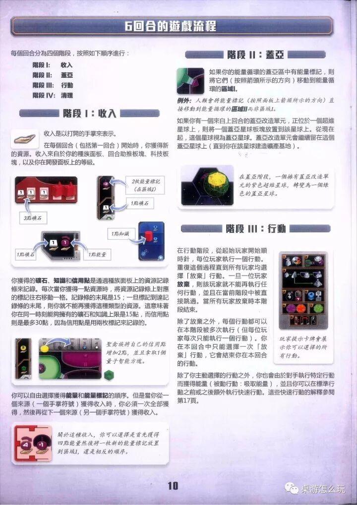
六回合的遊戲流程
每個回合分為四個階段,按照如下順序進行:
- 階段 I:收入
- 階段 II:蓋亞
- 階段 III:行動
- 階段 IV:清理
階段 I:收入
收入是以打開的手掌來表示。在每個回合(包括第一回合)開始時,你獲得新的資源。收入來自於你的種族面板、回合助推板塊、科技板塊,以及你在開發面板上的等級。
你獲得的礦石、知識和信用點是通過種族面板上的資源記錄條來記錄。每次當你獲得一點資源時,將資源記錄條上對應的標記往右移動一格。記錄條的末尾是 15,一旦標記到達記錄條的末尾,則你就不能再獲得這種類型的資源。這意味著你在同一時刻能擁有的礦石和知識上限是 15 點,而信用點則是最多 30 點,因為信用點是用兩枚標記來記錄的。
你可以自由選擇獲得能量和能量標記的順序。但是當你從一個來源(一個手掌符號)獲得收入時,你必須一次全部獲得,然後再從下一個來源(另一個手掌符號)獲得收入。
〔側注〕關於這種收入,你可以選擇是首先獲得四點能量然後將一枚新的能量標記放置到區域 I,還是相反的順序。
階段 II:蓋亞
如果你的能量循環的蓋亞區中有能量標記,將它們(按照箭頭所示的方向)移動到能量循環的區域 I。
例外:人類會將能量標記(按照面板上箭頭所示的方向)直接移動到能量循環的區域 II 而非區域 I。
如果你有一個來自上回合的蓋亞改造單元,正位於一個超維星球上,則將一個蓋亞星球板塊放置到該星球上。現在起,這個星球視為蓋亞星球,蓋亞改造單元會繼續留在這個蓋亞星球上(直到你在這個星球建造礦產基地)。
〔圖:在蓋亞階段,一個有蓋亞改造單元的紫色超維星球,轉變為一個綠色的蓋亞星球〕
階段 III:行動
在行動階段,起始玩家開始順時針,每位玩家執行一個行動。重複這個過程直到所有玩家均選擇「放棄」行動。一旦一位玩家放棄,則該玩家就不能再執行任何行動,並且在當前階段中被直接跳過。當所有玩家放棄時本階段結束。
除了放棄之外,每個行動都可以在本階段被多次執行(但每位玩家每次只能執行一個行動)。你在本回合中只能挑選一次「放棄」行動,它會結束你在本回合的所有行動。
除了你主動選擇的行動之外,你也會由於對手執行特定行動而獲得能量(被動行動:吸取能量),並且你可以在主行動之前或之後額外執行快速行動。這些快速行動的解釋參閱第 17 頁。
〔側注〕玩家提示卡牌會展示你可以選擇的所有行動。 〔側注〕聖禽族將自己的信用點增加 2 點,並且拿取 1 個量子智能方塊。
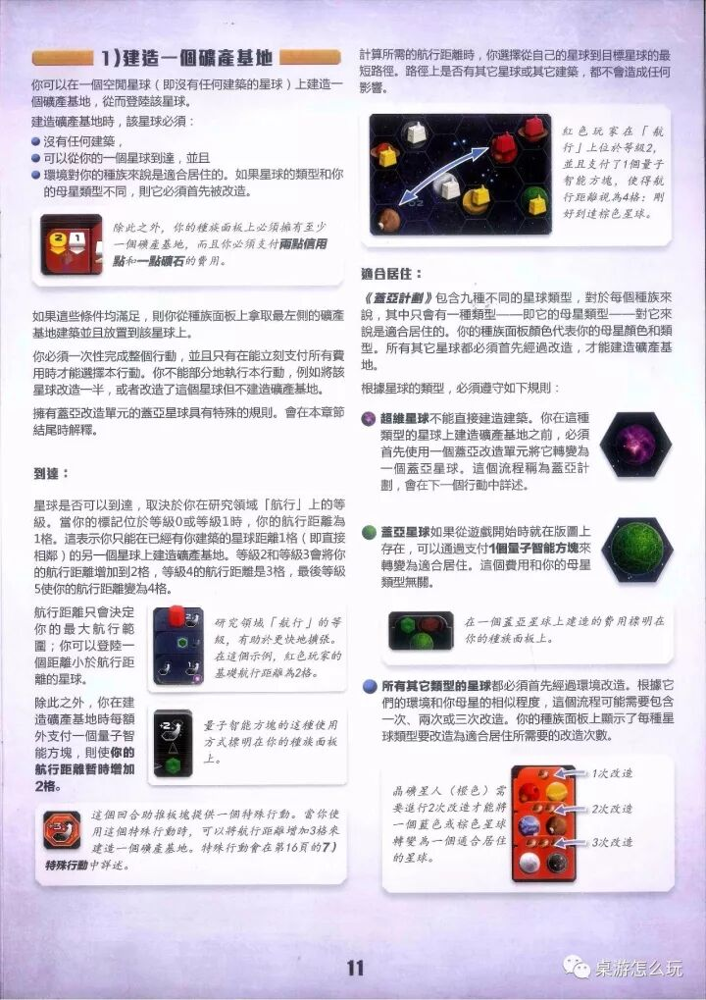
1) 建造一個礦產基地
你可以在一個空置星球(即沒有任何建築的星球)上建造一個礦產基地,而登陸該星球。
建造礦產基地時,該星球必須:
- 沒有任何建築,
- 環境對你的種族來說是適合居住的。如果星球的類型和你的母星類型不同,則它必須首先被改造,
- 可以被你的一個星球到達,並且支付兩點信用點和一點礦石的費用。
除此之外,你的種族面板上必須還有至少一個礦產基地。
如果這些條件均滿足,則從你種族面板上拿取最左側的礦產基地建築並放置到星球上。你必須一次性完成整個行動,並且只有在能立刻支付所有費用時才能選擇本行動。你不能部分地執行本行動,例如將該星球改造一半,或者改造了這個星球但不建造礦產基地。
適合居住
《蓋亞計劃》包含九種不同的星球類型,對於每個種族來說,其中只會有一種類型——即它的母星類型——對它來說是適合居住的。你的種族面板顏色代表你的母星顏色和類型。所有其它星球都必須首先經過改造,才能建造礦產基地。根據星球的類型,必須遵守如下規則:
- 蓋亞星球如果遊戲開始時就在版圖上存在,可以通過支付 1 個量子智能方塊來轉變為適合居住。這個費用和你的母星類型無關。在一個蓋亞星球上建造的費用標明在你的種族面板上。
- 有蓋亞改造單元的蓋亞星球具有特殊的規則,會在本章節結尾時解釋。
- 超維星球不能直接建造建築。你在這種類型的星球上建造礦產基地之前,必須首先使用一個蓋亞改造單元將它轉變為一個蓋亞星球。這個流程為蓋亞計劃,會在下一個行動中詳述。
- 所有其它類型的星球都必須首先經過環境改造,根據它們的環境和你母星的相似程度,這個流程可能需要包含一次、兩次或三次改造。你的種族面板上顯示了每種星球類型要改造為適合居住所需要的改造次數。〔圖:改造次數環形圖,標注 1 次改造/2 次改造/3 次改造〕
到達
星球是否可以到達,取決於你在研究領域「航行」上的等級。當你的標記位於等級 0 或等級 1 時,你的航行距離為 1 格。這表示你只能在已經有你建築的星球距離 1 格(即直接相鄰)的另一個星球上建造礦產基地。等級 2 和等級 3 會將你的航行距離增加到 2 格,等級 4 的航行距離是 3 格,最後等級 5 使你的航行距離變為 4 格。
計算所需的航行距離時,你選擇自己的星球到目標星球的最短路徑,路徑上是否有其它星球或其它建築,都不會造成任何影響。
航行距離只會決定你的最大航行距離:你可以登陸一個距離小於航行距離的星球。
〔側注〕紅色玩家在「航行」上位於等級 2,並且支付了 1 個量子智能方塊,使得航行距離視為 4 格:〔圖:到達棕色星球示例〕在這個示例,紅色玩家的基礎航行距離為 2 格。 〔側注〕除此之外,你在建造礦產基地時每額外支付一個量子智能方塊,則使你的航行距離暫時增加 2 格。量子智能方塊的這種使用方式標明在你的種族面板上。 〔側注〕這個回合助推板塊提供一個特殊行動。當你使用這個特殊行動時,可以將航行距離增加 3 格來建造一個礦產基地。特殊行動會在第 16 頁的 7) 特殊行動中詳述。 〔側注〕研究領域「航行」的等級,有助於更快地擴張。 〔側注〕晶礦〔?〕星人(橙色)需要進行 2 次改造才能將一個藍色或棕色星球轉變為一個適合居住的星球。
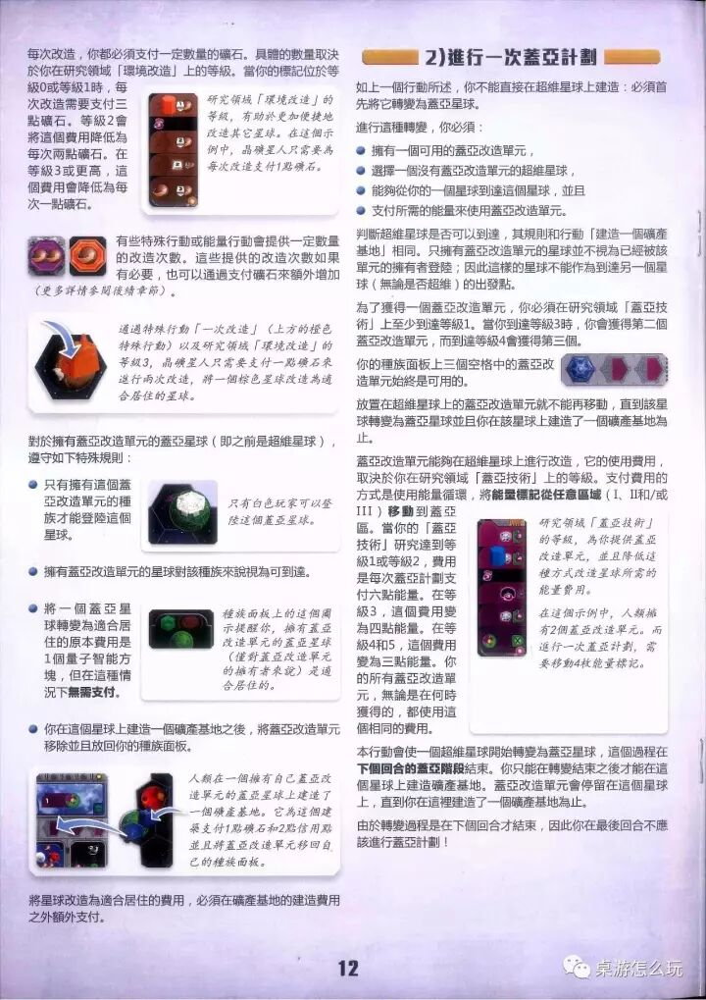
每次改造,你都必須支付一定數量的礦石。具體的數量取決於你在研究領域「環境改造」上的等級。當你的標記位於等級 0 或等級 1 時,每次改造需要支付三點礦石。等級 2 會將這個費用降低為每次兩點礦石。在等級 3 或更高,這個費用會降低為每次一點礦石。
有些特殊行動或能量行動會提供一定數量的改造次數。這些提供的改造次數如果有必要,也可以通過支付礦石來額外增加(更多詳情參後續章節)。
〔側注〕研究領域「環境改造」的等級,有助於更加便捷地改造其它星球:在這個示例中,晶礦〔?〕星人只需要為每次改造支付 1 點礦石。 〔側注〕通過特殊行動「一次改造」(上方的橙色特殊行動)以及研究領域「環境改造」的等級 3,晶礦〔?〕星人只需要支付一點礦石來進行兩次改造,將一個棕色星球改造為適合居住的星球。
2) 進行一次蓋亞計劃
如上一個行動所述,你不能直接在超維星球上建造:必須先將它轉變為蓋亞星球。
進行這種轉變,你必須:
- 擁有一個可用的蓋亞改造單元,
- 挑選一個沒有蓋亞改造單元的超維星球,
- 能夠從你的一個星球到達這個星球,並且支付所需的能量來使用蓋亞改造單元。
判斷超維星球是否可以到達,其規則和行動「建造一個礦產基地」相同。只擁有蓋亞改造單元的星球不視為已經被該單元的擁有者登陸;因此這樣的星球不能作為到達另一個星球(無論是否超維)的出發點。
放置在超維星球上的蓋亞改造單元就不能再移動,直到該星球轉變為蓋亞星球並且你在該星球上建造了一個礦產基地為止。
為了獲得一個蓋亞改造單元,你必須在研究領域「蓋亞技術」上至少到達等級 1。當你到達等級 3 時,你會獲得第二個蓋亞改造單元,而到達等級 4 會獲得第三個。你的種族面板上三個空格中的蓋亞改造單元始終是可用的。
蓋亞改造單元能夠在超維星球上進行改造,它的使用費用,取決於你在研究領域「蓋亞技術」上的等級。支付費用的方式是使用能量循環,將能量標記從任意區域(I、II 和/或 III)移動到蓋亞區。當你的「蓋亞技術」達到等級 1 或等級 2,費用是每次蓋亞計劃支付六點能量。在等級 3,這個費用變為四點能量。在等級 4 和 5,這個費用變為三點能量。你的所有蓋亞改造單元,無論是何時獲得的,都使用這個相同的費用。
〔側注〕研究領域「蓋亞技術」的等級,為你提供蓋亞改造單元,並且降低這種方式改造星球所需的能量費用。 〔側注〕在這個示例中,人類擁有 2 個蓋亞改造單元,而進行一次蓋亞計劃,需要移動 4 枚能量標記。
本行動會使一個超維星球開始轉變為蓋亞星球,這個過程在下個回合的蓋亞階段結束。你只能在轉變結束之後才能在這個星球上建造礦產基地。蓋亞改造單元會停留在這個星球上,直到你在這裡建造了一個礦產基地為止。
由於轉變過程是在下個回合才結束,因此你在最後回合不應進行蓋亞計劃!
有蓋亞改造單元的蓋亞星球
對於有蓋亞改造單元的蓋亞星球(即之前是超維星球),遵守如下特殊規則:
- 只有擁有這個蓋亞改造單元的種族才能登陸這個蓋亞星球。
- 擁有蓋亞改造單元的星球對該種族來說視為可到達。
- 種族面板上的這個圖示提醒你,擁有蓋亞改造單元的蓋亞星球(僅對蓋亞改造單元的擁有者來說)是適合居住的。
- 將一個蓋亞星球轉變為適合居住的原本費用是 1 個量子智能方塊,但在這種情況下無需支付。
你在這個星球上建造一個礦產基地之後,將蓋亞改造單元移除並且放回你的種族面板。
〔側注〕人類在一個擁有自己蓋亞改造單元的蓋亞星球上建造了一個礦產基地。它為這個建造支付 1 點礦石和 2 點信用點,並且將蓋亞改造單元移回自己的種族面板。
將星球改造為適合居住的費用,必須在礦產基地的建造費用之外額外支付。
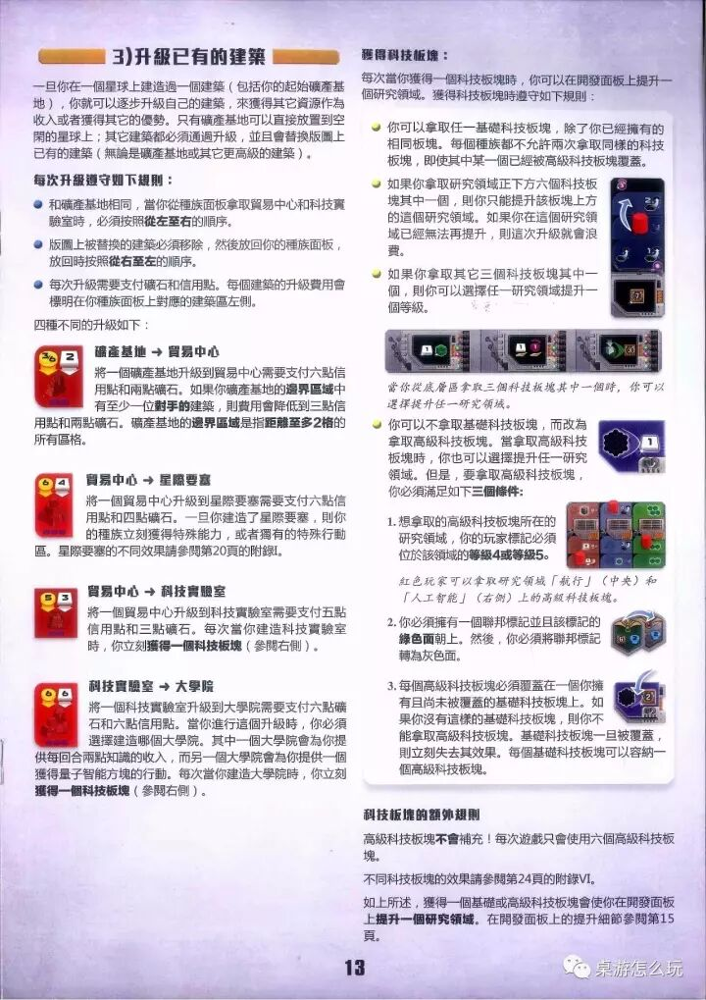
3) 升級已有的建築
一旦你在一個星球上建造過一個建築(包括你的起始礦產基地),你就可以逐步升級自己的建築,來獲得其它資源作為收入或者獲得其它的優勢。只有礦產基地可以直接放置到空閑的星球上;其它建築都必須通過升級,並且會替換版圖上已有的建築(無論是礦產基地或其它更高級的建築)。
每次升級遵守如下規則:
- 和礦產基地相同,當你從種族面板拿取貿易中心和科技實驗室時,必須按照從左至右的順序。
- 版圖上被替換的建築必須移除,然後放回你的種族面板,放回時按照從右至左的順序。
- 每次升級需要支付礦石和信用點。每個建築的升級費用會標明在你種族面板上對應的建築區左側。
四種不同的升級如下:
礦產基地 → 貿易中心:將一個礦產基地升級到貿易中心需要支付六點信用點和兩點礦石。如果你的礦產基地的鄰界區域中有至少一位對手的建築,則費用會降低到三點信用點和兩點礦石。礦產基地的鄰界區域是指距離至多 2 格的所有區格。
貿易中心 → 星際要塞:將一個貿易中心升級到星際要塞需要支付六點信用點和四點礦石。一旦你建造了星際要塞,則你的種族立刻獲得特殊能力,或者獨有的特殊行動。星際要塞的不同效果請參閱第 20 頁的附錄。
貿易中心 → 科技實驗室:將一個貿易中心升級到科技實驗室需要支付五點信用點和三點礦石。每次當你建造科技實驗室時,你立刻獲得一個科技板塊(參見右側)。
科技實驗室 → 大學院:將一個科技實驗室升級到大學院需要支付六點礦石和六點信用點。當你進行這個升級時,你必須挑選建造哪個大學院。其中一個大學院會為你提供每回合兩點知識的收入,而另一個大學院會為你提供一個獲得量子智能方塊的行動。每次當你建造大學院時,你立刻獲得一個科技板塊(參見右側)。
獲得科技板塊
每次當你獲得一個科技板塊時,你可以在開發面板上提升一個研究領域。獲得科技板塊時遵守如下規則:
- 你可以拿取任一基礎科技板塊,除了你已經有的相同板塊。每個種族都不允許兩次拿取同樣的科技板塊,即使其中某一個已經被高級科技板塊覆蓋。
- 如果你拿取研究領域正下方六個科技板塊其中一個,則你只能提升該板塊上方的這個研究領域。如果你在這個研究領域已經無法再提升,則這次提升就會浪費。
- 如果你拿取其它三個科技板塊其中一個,則你可以挑選任一研究領域提升一個等級。
- 當你從底層區拿取三個科技板塊其中一個時,你可以選擇提升任一研究領域。
- 你可以不拿取基礎科技板塊,而改為拿取高級科技板塊。當拿取高級科技板塊時,你也可以挑選提升任一研究領域。但是,要拿取高級科技板塊,你必須滿足如下三個條件:
1. 想拿取的高級科技板塊所在的研究領域,你的玩家標記必須位於該領域的等級 4 或等級 5。 2. 你必須有一個聯邦標記且該標記的綠色面朝上。然後,你必須將聯邦標記翻轉為灰色面。 3. 每個高級科技板塊必須覆蓋在一個你擁有且尚未被覆蓋的基礎科技板塊上。如果你沒有這樣的基礎科技板塊,你不能拿取高級科技板塊。基礎科技板塊一旦被覆蓋,則立刻失去其效果。每個基礎科技板塊可以容納一個高級科技板塊。
高級科技板塊不會補充!每次遊戲只會使用六個高級科技板塊。
不同科技板塊的效果請參閱第 24 頁的附錄 IV。如上所述,獲得一個基礎或高級科技板塊會使你在開發面板上提升一個研究領域。在開發面板上的提升細節參閱第 15 頁。
〔側注〕紅色玩家可以拿取研究領域「航行」(中央)和「人工智能」(右側)上的高級科技板塊。
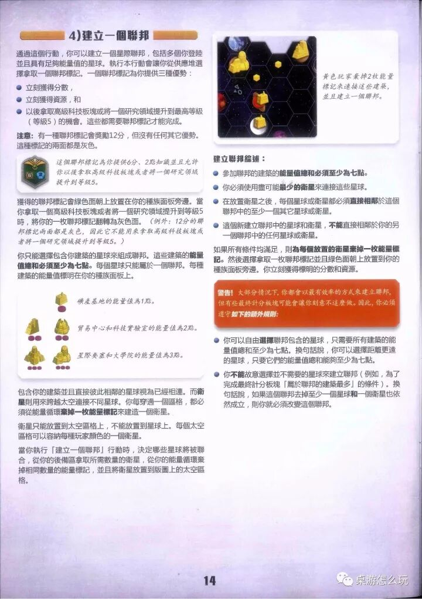
4) 建立一個聯邦
通過這個行動,你可以建立一個星際聯邦,包括多個你登陸且具有足夠能量值的星球。執行本行動會從供應堆選擇拿取一個聯邦標記。一個聯邦標記為你提供三種優勢:
- 立刻獲得分數,
- 立刻獲得資源,和
- 以後拿取高級科技板塊或將一個研究領域提升到最高等級(等級 5)的機會。這些都需要聯邦標記才能完成。
注意:有一種聯邦標記會獎勵 12 分,但沒有任何其它優勢。這種標記的兩面都是灰色。
〔圖注〕這個聯邦標記為你提供 6 分、2 點知識,且允許你以後拿取高級科技板塊或者將一個研究領域提升到等級 5。
建立聯邦規則
- 你只能挑選包含你建築的星球來組成聯邦。這些建築的能量值總和必須至少為七點。每個星球只能屬於一個聯邦,每種建築的能量值標明在你的種族面板上:礦產基地的能量值為 1 點,貿易中心和科技實驗室的能量值為 2 點,星際要塞和大學院的能量值為 3 點。
- 包含你的建築且直接彼此相鄰的星球視為已經相連,而衛星則用來跨越太空連接不同星球。你每穿過一個區格,都必須從能量循環燒掉一枚能量標記來建造一個衛星。
- 衛星只能放置到太空區格上,不能放置到星球上。每個太空區格可以容納每種玩家顏色的一個衛星。
- 你必須使用可能最少的衛星來連接這些星球。
- 在放置衛星之後,每個星球或衛星都必須直接相鄰於這個聯邦中的至少一個其它星球或衛星。
- 這個新建立聯邦中的星球和衛星,不能直接相鄰於你的另一個聯邦中的任何星球或衛星。
執行本行動
當你執行「建立一個聯邦」行動時,決定哪些星球將被聯合,從你的後備區拿取所需數量的衛星,從你的能量循環燒掉相同數量的能量標記,並將衛星放置到版圖上的太空區格。
如果所有條件均滿足,則為每個放置的衛星燒掉一枚能量標記。然後挑選拿取一枚聯邦標記並且綠色面朝上放置到你的種族面板旁。你立刻獲得標明的分數和資源。
獲得的聯邦標記會綠色面朝上放置在你的種族面板旁。當你拿取一個高級科技板塊或者將一個研究領域提升到等級 5 時,將你的一枚聯邦標記翻轉為灰色面。(例外:12 分的聯邦標記兩面都是灰色,因此它不能用來拿取高級科技板塊或將一個研究領域提升到等級 5。)
警告
!大部分情況下,你都會以最有效率的方式來成立聯邦,但有些最終計分板塊可能會讓你刻意不這麼做。因此,你必須遵守如下的額外規則:
- 你可以自由挑選聯邦包含的星球,只需要所有建築的能量值總和至少為七點。換句話說,你可以挑選距離更遠的星球,只要它們的能量值總和仍至少為七點。
- 你不能故意挑選不需要的星球來建立聯邦(例如,為了完成最終計分板塊「屬於聯邦的建築最多」的條件)。換句話說,如果這個聯邦去掉至少一個星球和一個衛星也依然成立,則你就必須改變這個聯邦。
〔側注〕黃色玩家燒掉 2 枚能量標記來連接這些建築,並且建立一個聯邦。
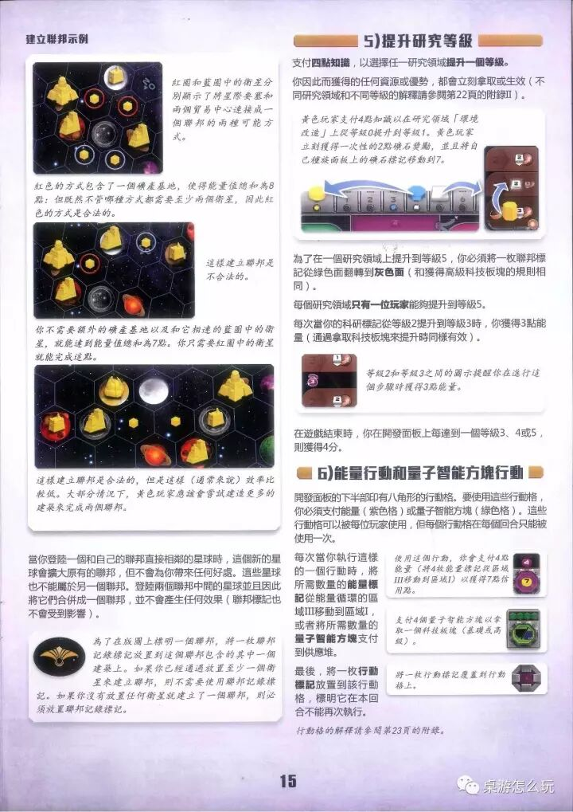
建立聯邦示例
紅圈和藍圈中的衛星分別顯示了將星際要塞和兩個貿易中心連接成一個聯邦的兩種可能方式。
紅色的方式包含了一個礦產基地,使得能量值總和為 8 點;但既然不管哪種方式都需要至少兩個衛星,因此紅色的方式是合法的。
〔圖〕這樣建立聯邦是不合法的:你不需要額外的礦產基地以及和它相連的藍圈中的衛星,就能達到能量值總和為 7 點。你只需要紅圈中的衛星就能完成這點。
〔圖〕這樣建立聯邦是合法的,但是這樣(通常來說)效率比較低。大部分情況下,黃色玩家應該會嘗試建造更多的建築來完成兩個聯邦。
當你登陸一個和自己的聯邦直接相鄰的星球時,這個新的星球會擴大原有的聯邦,但不會為你帶來任何好處。這些星球也不能屬於另一個聯邦。登陸兩個聯邦中間的星球並且因此將它們合併成一個聯邦,不會產生任何效果(聯邦標記也不會受到影響)。
為了在版圖上標明一個聯邦,將一枚聯邦記錄標記放置到這個聯邦包含的其中一個建築上。如果你已經通過放置至少一個衛星來建立聯邦,則不需要使用聯邦記錄標記。如果你沒有放置任何衛星就建立了一個聯邦,則必須放置聯邦記錄標記。
5) 提升研究等級
支付四點知識,以選擇任一研究領域提升一個等級。你因此而獲得的任何資源或優勢,都會立刻拿取或生效(不同研究領域和不同等級的解釋請參閱第 22 頁的附錄 II)。
〔例〕黃色玩家支付 4 點知識以在研究領域「環境改造」上從等級 0 提升到等級 1。黃色玩家立刻獲得一次性的 2 點礦石獎勵,並且將自己種族面板上的礦石標記移動到 7。
為了在一個研究領域上提升到等級 5,你必須將一枚聯邦標記綠色面翻轉到灰色面(和獲得高級科技板塊的規則相同)。每個研究領域只有一位玩家能提升到等級 5。
每次當你的科研標記從等級 2 提升到等級 3 時,你獲得 3 點能量(通過拿取科技板塊來提升時同樣有效)。等級 2 和等級 3 之間的圖示提醒你在進行這一個步驟時獲得 3 點能量。
在遊戲結束時,你在開發面板上每達到一個等級 3、4 或 5,則獲得 4 分。
6) 能量行動和量子智能方塊行動
開發面板的下半部印有八角形的行動格。要使用這些行動格,你必須支付能量(紫色格)或量子智能方塊(綠色格)。這些行動格可以被每位玩家使用,但每個行動格在每個回合只能被使用一次。
每次當你執行這樣的一個行動時,將所需數量的能量標記從能量循環的區域 III 移動到區域 I,或者將所需數量的量子智能方塊支付到供應堆。
最後,將一枚行動標記放置到該行動格上(將一枚行動標記覆蓋到行動格),標明它在本回合不能再次執行。
〔例〕使用這個行動,你會支付 4 點能量(將 4 枚能量標記從區域 III 移動到區域 I)以獲得 7 點信用點;或者支付 4 個量子智能方塊以拿取一個科技板塊(基礎或高級)。
行動格的解釋請參閱第 23 頁的附錄。
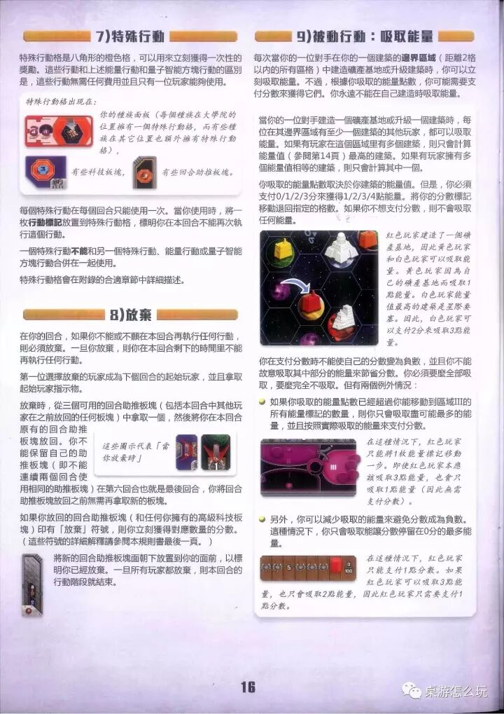
7) 特殊行動
特殊行動格是八角形的橙色格,可以用來立刻獲得一次性的優勢。這些行動和上述能量行動和量子智能方塊行動的區別是,這些行動無需任何費用且只有一位玩家能夠使用。
特殊行動格出現在:
- 你的種族面板(每個種族在大學院的位置擁有一個特殊行動格,而有些種族在其它位置也額外擁有特殊行動格),
- 有些科技板塊,
- 有些回合助推板塊。
每個特殊行動在每個回合只能使用一次。當你使用時,將一枚行動標記放置到特殊行動格,標明你在本回合不能再次執行這個行動。
一個特殊行動不能和另一個特殊行動、能量行動或量子智能方塊行動合併在一起使用。
特殊行動格會在附錄的合適章節中詳細描述。
8) 放棄
在你的回合,如果你不能或不願在本回合再執行任何行動,則必須放棄。一旦你放棄,則你在本回合剩下的時間裡不能再執行任何行動。
第一位選擇放棄的玩家成為下個回合的起始玩家,並且拿取起始玩家指示物。
放棄時,從三個可用的回合助推板塊(包括本回合中其他玩家在之前放回的任何板塊)中拿取一個,然後將你在本回合原有的回合助推板塊放回。你不能保留自己的助推板塊(即不能連續兩個回合使用相同的助推板塊)。在第六回合也就是最後回合,你將回合助推板塊放回之前無需再拿取新的板塊。
如果你放回的回合助推板塊(和任何你擁有的高級科技板塊)印有「放棄」符號,則你立刻獲得對應數量的分數。(這些符號的詳細解釋請參閱本規則書最後一頁。)
將新的回合助推板塊面朝下放置到你的面前,以標明你已經放棄。一旦所有玩家都放棄,則本回合的行動階段就結束。
9) 被動行動:吸取能量
每次當你的一位對手在你的一個建築的邊界區域(距離 2 格以內的所有區格)中建造礦產基地或升級建築時,你可以立刻吸取能量。不過,根據你吸取的能量點數,你可能需要支付分數來獲得它們。你永遠不能在自己建造時吸取能量。
當你的一位對手建造一個礦產基地或升級一個建築時,每位在其邊界區域有至少一個建築的其他玩家,都可以吸取能量。如果有玩家在這個區域裡有多個建築,則只會計算能量值(參閱第 14 頁)最高的建築。如果有玩家擁有多個能量值相等的建築,則只會計算其中一個。
你吸取的能量點數取決於你建築的能量值。但是,你必須支付 0/1/2/3 分來獲得 1/2/3/4 點能量。將你的分數標記移動退回指定的格數。如果你不想支付分數,則不會吸取任何能量。
你在支付分數時不能使自己的分數變成負數,並且你不能故意吸取其中部分的能量來節省分數。你必須要麼全部吸取,要麼完全不吸取。但有兩個例外情況:
- 如果你吸取的能量點數已經超過你能移動到區域 III 的所有能量標記的數量,則你只會吸取盡可能最多的能量,並且按照實際吸取的能量來支付分數。〔例〕在這種情況下,紅色玩家只能將 1 枚能量標記移動一步。即使紅色玩家本想吸取 3 點能量,也只會吸取 1 點能量(因此無需支付分數)。
- 另外,你可以減少吸取的能量來避免分數成為負數。〔例〕在這種情況下,紅色玩家只能支付 1 點分數。如果紅色玩家可以吸取 3 點能量,也只會吸取 2 點能量,因此紅色玩家只需要支付 1 點分數。
〔側注〕紅色玩家建造了一個礦產基地,因此黃色玩家和白色玩家可以吸取能量。黃色玩家因為自己的礦產基地而吸取 1 點能量。白色玩家能量值最高的建築是星際要塞。因此,白色玩家可以支付 2 分來吸取 3 點能量。
當前玩家需要提醒自己的對手吸取能量。玩家按照順時針依次決定是否吸取能量。即使本回合已經放棄的對手也可以吸取能量。
你只需要為這種由於對手行動而吸取的能量支付分數,你無需為其它來源獲得的能量支付分數。
10) 快速行動
除了你的標準行動,你也可以在自己行動時執行這些快速行動。
你可以在標準行動之前或之後執行任意數量的快速行動,但不能在標準行動之中執行。
如果當前不是你在執行行動(例如,在被動吸取能量時、已經放棄時或收入階段時),你不能執行快速行動。
你在自己行動時必須保證執行一個標準行動,才能執行其它快速行動(放棄也是一個標準行動)。
快速行動有:
- 將 1 點知識替換為 1 點信用點。
- 將 1 點礦石替換為 1 點信用點。
- 將 1 點礦石替換為 1 個新的能量標記(放置到區域 I)。
- 將 1 個量子智能方塊替換為 1 點礦石。
- 將一枚能量標記從種族面板上能量循環的區域 II 移除,以將一枚能量標記從區域 II 移動到區域 III(這是一種燒能量來加速循環的方式,如你的種族面板上箭頭所示)。
- 支付 1 個量子智能方塊以將航行距離暫時增加 2 格。
- 支付 4 點能量以獲得 1 個量子智能方塊。
- 支付 3 點能量以獲得 1 點礦石。
- 支付 4 點能量以獲得 1 點知識。
- 支付 1 點能量以獲得 1 點信用點。
你種族面板右側的列表顯示了所有的交易方式。
階段 IV:清理
在本階段,你們為下個回合做好準備。因此本階段在最後回合會略過。
- 將所有行動標記從所有能量行動格、量子智能方塊行動格和特殊行動格上移除。
- 將所有回合助推板塊翻轉為面朝上。
- 將剛結束的回合對應的回合計分板塊從計分面板上移除。
- 下個回合開始。
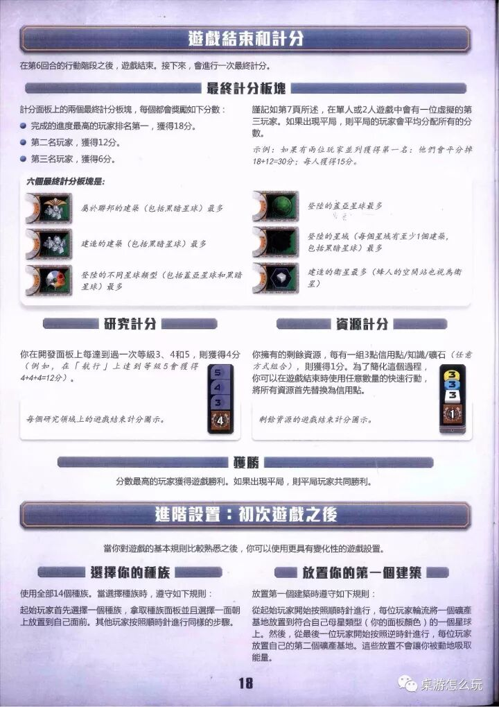
遊戲結束和計分
在第 6 回合的行動階段之後,遊戲結束。接下來,會進行一次最終計分。
最終計分板塊
計分面板上的兩個最終計分板塊,每個都會獎勵如下分數:
- 完成的進度最高的玩家排名第一,獲得 18 分。
- 第二名玩家,獲得 12 分。
- 第三名玩家,獲得 6 分。
如第 7 頁所述,在單人或 2 人遊戲中會有一位虛擬的第三玩家。如果出現平局,則平局的玩家會平均分配所有的分數。
示例:如果有兩位玩家並列獲得第一名,他們會平分掉 18+12=30 分,每人獲得 15 分。
六個最終計分板塊是:
- 屬於聯邦的建築(包括黑暗星球)最多
- 登陸的蓋亞星球最多
- 登陸的星域(每個星域有至少 1 個建築,包括黑暗星球)最多
- 建造的衛星最多(蜂人的空間站也視為衛星)
- 登陸的不同星球類型(包括蓋亞星球和黑暗星球)最多
研究計分
你在開發面板上每達到過一次等級 3、4 和 5,則獲得 4 分(例如,在「航行」上達到等級 5 會獲得 4+4+4=12 分)。
〔圖注〕每個研究領域上的遊戲結束計分圖示。
資源計分
你擁有的剩餘資源,每有一組 3 點信用點/知識/礦石(任意方式組合),則獲得 1 分。為了簡化這個過程,你可以在遊戲結束時使用任意數量的快速行動,將所有資源首先替換為信用點。
〔圖注〕剩餘資源的遊戲結束計分圖示。
獲勝
分數最高的玩家獲得遊戲勝利。如果出現平局,則平局玩家共同勝利。
進階設置:初次遊戲之後
當你對遊戲的基本規則比較熟悉之後,你可以使用更具有變化性的遊戲設置。
挑選你的種族
使用全部 14 個種族。當挑選種族時,遵守如下規則:
起始玩家首先挑選一個種族,拿取種族面板並且挑選一面朝上放置到自己面前。其他玩家按照順時針進行同樣的步驟。
放置你的第一個建築
放置第一個建築時遵守如下規則:
起始玩家開始按照順時針進行,每位玩家輪流將一個礦產基地放置到符合自己母星類型(你的面板顏色)的一個星球上。然後,最後一位玩家開始按照逆時針進行,每位玩家放置自己的第二個礦產基地。這些放置不會讓你被動地吸取能量。
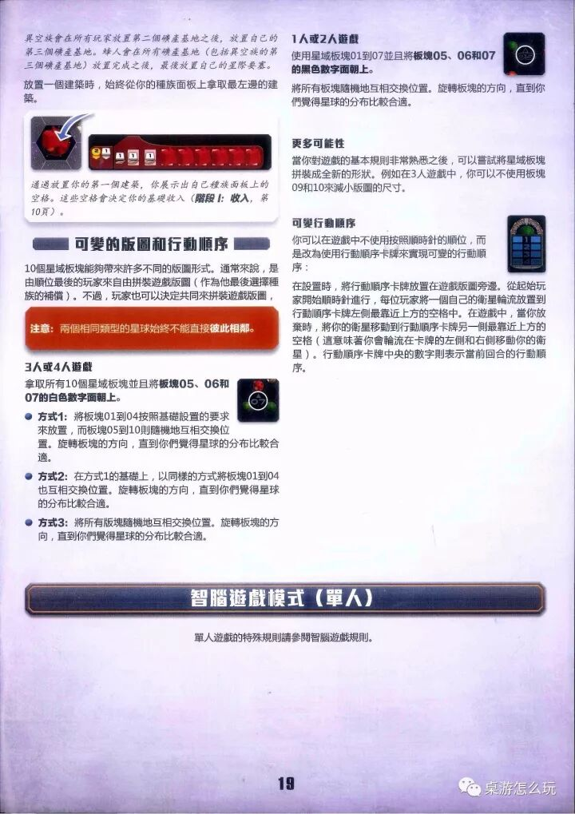
翼空族會在所有玩家放置第二個礦產基地之後,放置自己的第三個礦產基地。蜂人會在所有礦產基地(包括翼空族的第三個礦產基地)放置完成之後,最後放置自己的星際要塞。
放置一個建築時,始終從你的種族面板上拿取最左側的建築。
通過放置你的第一個建築,你展示出自己種族面板上的空格。這些空格會決定你的基本收入(階段 I:收入,第 10 頁)。
可變的版圖和行動順序
10 個星域板塊能帶來許多不同的版圖形式。通常來說,是由順位最後的玩家來自由拼裝遊戲版圖(作為他最後挑選種族的補償)。不過,玩家也可以決定共同來拼裝遊戲版圖,將所有板塊隨機地互相交換位置。旋轉板塊的方向,直到你們覺得星球的分布比較合適。
注意:兩個相同類型的星球始終不能直接彼此相鄰。
1 人或 2 人遊戲:使用星域板塊 01 到 07 且將板塊 05、06 和 07 的黑色數字面朝上。
3 人或 4 人遊戲:拿取所有 10 個星域板塊且將板塊 05、06 和 07 的白色數字面朝上。
- 方式 1:將板塊 01 到 04 按照基礎設置的要求來放置,而板塊 05 到 10 則隨機地互相交換位置。旋轉板塊的方向,直到你們覺得星球的分布比較合適。
- 方式 2:在方式 1 的基礎上,以同樣的方式將板塊 01 到 04 也互相交換位置。旋轉板塊的方向,直到你們覺得星球的分布比較合適。
- 方式 3:將所有板塊隨機地互相交換位置。旋轉板塊的方向,直到你們覺得星球的分布比較合適。
更多可能性
當你對遊戲的基本規則非常熟悉之後,可以嘗試將星域板塊拼裝成全新的形狀。例如在 3 人遊戲中,你可以不使用板塊 09 和 10 來減小版圖的尺寸。
可變行動順序
你可以在遊戲中不使用按照順時針的順位,而是改為使用行動順序卡牌來實現可變的行動順序:
在設置時,將行動順序卡牌放置在遊戲版圖旁。起始玩家開始順時針進行,每位玩家將一個自己的衛星輪流放置到行動順序卡牌左側最靠近上方的空格中。在遊戲中,當你放棄時,將你的衛星移動到行動順序卡牌另一側最靠近上方的空格(這意味著你會輪流在卡牌的左側和右側移動你的衛星)。行動順序卡牌中央的數字則表示當前回合的行動順序。
智腦遊戲模式(單人)
單人遊戲的特殊規則請參閱智腦遊戲規則。